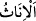
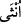
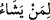

“Dilediğine kız çocukları bahşeder,” onlarla beraber erkek olmaz. Şuayb ve Lût
(a.s.)’a hibe ettiği gibi. Hibe, kendi mülkünü ve sahip olduğun bir şeyi karşılıksız
olarak başkasına vermendir. Burada hibe eden Allah Teâlâ hazretleridir. Çünkü O,
herkese hak edişi miktarınca verir. Herhangi bir karşılık ve bedel de istemez. “__WORD__/inâs” kelimesi “__WORD__/ünsâ”nın çoğulu olup “erkek olmayan” anlamındadır.
Âyette kız evlâdlar erkek evlâdlara takdim edilmiştir. Çünkü neslin çoğalması için
bunların yeri ve önemi daha büyüktür. Yahut kız babalarının kalplerini hoş etmek için bu
takdim yapılmıştır. Çünkü bu takdimde kız çocuklarını şereflendirip onlarla bir ünsiyet
kurulmaktadır. Bunlar, __WORD__ ifâdesinde yer alan “lâm-ı intifâiyye” ile beraber Allah’ın
hibeleri olarak nitelendirilmişlerdir. Yani Allah Teâlâ, böylece bu hibenin insanların
faydasına yönelik olduğuna işâret etmektedir. Yahut bu takdim, insan cinsine yapılan ilk
hibenin tertibine riâyet edilerek yapılmıştır. Zîrâ Allah Teâlâ, Âdem (a.s.)’a ilk önce eşi
Havva’yı hibe etmiştir. Âdem’den, onun alt yahut üst kaburga kemiğinden Havva’yı
yaratmıştır. Kamus’ta böyle geçmektedir.
Kevaşî’de denilir ki: Kız evlâdların takdim edilişi, onları kabullenemeyip diri diri
toprağa gömenlere bir sitem, kınama ve azar içindir. Ayrıca kız evlâdları zayıf yapılı
olup, kendilerine merhamet ve iyilik edilmesine de bir îmâ vardır.
Şir’atü’l-İslâm ve şerhinde şöyle denilmektedir: Kişi kız evlâdı olduğuna daha fazla
sevinmeli ve onları diri diri toprağa gömen câhiliye devri insanlarına muhâlefet
etmelidir. Hadis-i şerifte şöyle buyrulur: “Bir kadının ilk çocuğunun kız olması,
kadının hayırlı ve bereketli olmasındandır.”[130] Allah Teâlâ’nın “Dilediğine kız
evlâdlar bahşeder” âyetine kulak vermelidir. İşte Allah Teâlâ bu durumu arz ederken
önce kız evlâdlarından başlamıştır.”
Bir başka hadis-i şerifte şöyle buyrulmaktadır: “Kim bu kızlardan bir şeyle imtihan
edilir, onlara iyi muâmele eder (iyi bir eğitim verir) ve onları (din ve ahlâk
bakımından) denk ve uygun kimselerle evlendirirse bu kız evladları ona cehennemden
kalkan olur.”[131]
Peygamberimiz (s.a.) kız evlâdlarını “mücehhezât ve mü’nesât” diye nitelemiş;
“onların uğur ve bereket vesîlesi olarak çeyizleri hep hazırdır. Ayrıca anneleri, babaları
ve eşleri için onlar birer ünsiyet ve dostluk vesilesidir” demek istemiştir.
Hadis-i şerifte şöyle buyrulur: “Allah’tan geçimi kolay, meşakkatsiz bir evladla beni
rızıklandırmasını istedim. O da bana kız evlâdlar ihsân etti.”[132]
Hadis-i kudsîde doğduğu anda kız evladına hitâben: “Gel, in, doğ! Ben babana
yardımcı olacağım” deneceği haber verilmektedir.
Yine bir hadis-i şerifte şöyle buyrulmaktadır: “Kız evlâdlarını hor görmeyin. Zîrâ
ben de kız babasıyım.”[133]
Fakir (Bursevî)’ye göre bunun mânâsı şudur: Peygamberimiz (s.a.)’in kız babası
olması, kız evladlarının hor görülmemesi konusunda yeterlidir. Çünkü Allah Teâlâ,
Sevgili Peygamberi’ne ancak iyi ve hayırlı olanı seçer, verir. Kim Allah’ın bu tercihine